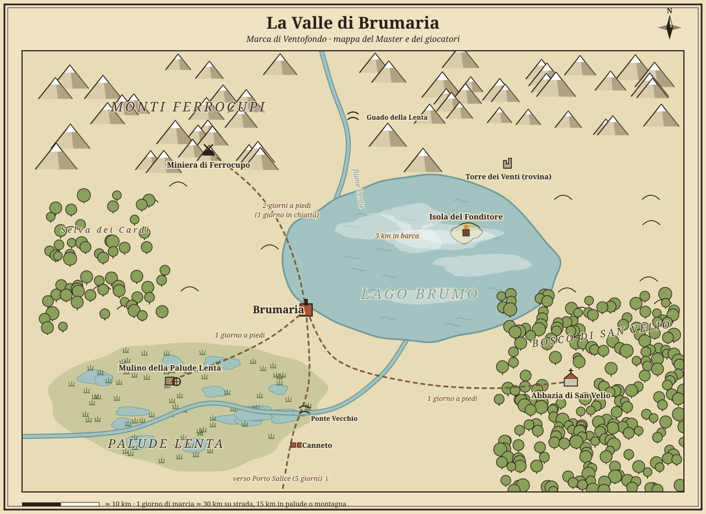

Dungeons & Dragons è un gioco in cui si racconta una storia insieme. Non ci sono un tabellone né vincitori e perdenti: il gruppo gioca unito contro i pericoli della storia.
Il gioco funziona come una conversazione:
D&D usa sette dadi. Si chiamano con la lettera d seguita dal numero di facce: d4, d6, d8, d10, d12 e d20. Il settimo è il d100, che si fa tirando due d10.
Il d20 è il dado più importante: lo usi ogni volta che provi a fare qualcosa di difficile.
Quasi tutto in D&D si risolve così:
Esempio. Pip vuole saltare da un tetto all'altro. Il Master dice: «Fai una prova di Acrobazia». Pip tira un d20 e fa 11, poi aggiunge il suo bonus di Acrobazia (+5): il totale è 16. Il Master aveva deciso che serviva 12, quindi Pip atterra con eleganza dall'altra parte!
A volte la situazione ti aiuta (il nemico è a terra, un amico ti distrae il bersaglio): allora hai vantaggio, tiri due d20 e tieni il più alto. Se invece la situazione ti ostacola (sei al buio, sei ferito a un braccio) hai svantaggio: tiri due d20 e tieni il più basso.
Se in un attacco tiri un 20 naturale, cioè il dado mostra 20, fai un colpo critico: colpisci sempre e tiri il doppio dei dadi di danno. Se tiri un 1 naturale, l'attacco fallisce sempre.
Ogni personaggio ha sei caratteristiche. Ognuna ha un punteggio (per esempio 16) e un modificatore (per esempio +3). Quasi sempre userai il modificatore.
| Caratteristica | Abbreviazione | A cosa serve |
|---|---|---|
| Forza | FOR | Muscoli: sollevare, spingere, colpire con armi pesanti |
| Destrezza | DES | Agilità: schivare, muoversi in silenzio, tirare con l'arco |
| Costituzione | COS | Resistenza: salute, fatica, veleni |
| Intelligenza | INT | Studio: magia, storia, ragionamento |
| Saggezza | SAG | Istinto: notare le cose, capire le persone, forza di volontà |
| Carisma | CAR | Personalità: convincere, ingannare, intrattenere |
Le abilità sono le cose specifiche in cui il tuo personaggio è bravo. Sulla scheda trovi già il bonus totale da aggiungere al d20. Non serve scegliere tu l'abilità giusta: il Master ti dirà «fai una prova di…».
| Abilità | Esempio | Abilità | Esempio |
|---|---|---|---|
| Acrobazia (DES) | tenersi in equilibrio | Intuizione (SAG) | capire se qualcuno mente |
| Addestrare Animali (SAG) | calmare un lupo | Intrattenere (CAR) | cantare, recitare |
| Arcano (INT) | riconoscere la magia | Medicina (SAG) | curare un ferito |
| Atletica (FOR) | arrampicarsi, nuotare | Natura (INT) | piante, animali, terreno |
| Furtività (DES) | muoversi senza essere visti | Percezione (SAG) | notare dettagli e pericoli |
| Indagare (INT) | cercare indizi | Persuasione (CAR) | convincere con buone ragioni |
| Inganno (CAR) | mentire in modo credibile | Rapidità di Mano (DES) | borseggiare, giochi di prestigio |
| Intimidire (CAR) | spaventare qualcuno | Religione (INT) | dei, riti, non morti |
| Storia (INT) | eventi e leggende del passato | Sopravvivenza (SAG) | seguire tracce, orientarsi |
Tiri salvezza. A volte il Master ti chiede un tiro salvezza («TS su Destrezza!»). Serve a evitare qualcosa di brutto, come una trappola, un incantesimo o la paura. Si tira 1d20 e si aggiunge il bonus indicato nella scheda.
Quando inizia uno scontro, il gioco si divide in round. In un round ogni personaggio e ogni mostro fa il suo turno, uno alla volta. Un round dura circa 6 secondi nel mondo del gioco.
Tutti tirano 1d20 + il bonus di Iniziativa. Chi fa di più agisce per primo. Il Master scrive l'ordine dei turni.
Nel tuo turno puoi fare tre cose, nell'ordine che vuoi:
| 🏃 Movimento | ⚔ Un'Azione | ⚡ Un'Azione bonus (se ne hai una) |
|---|---|---|
| Ti sposti fino alla tua Velocità (di solito 9 metri, cioè 6 quadretti). Puoi dividerlo: un po' prima dell'azione e un po' dopo. | La cosa principale del tuo turno: attaccare, lanciare un incantesimo, aiutare un amico… (vedi la lista qui sotto) | Solo se la tua scheda ne indica una (per esempio «Parola Guaritrice», o l'«Azione scaltra» di Pip). |
Puoi anche parlare (qualche frase) e fare piccole cose come aprire una porta o estrarre un'arma.
Una volta per round puoi fare una reazione, cioè un'azione velocissima anche fuori dal tuo turno. La più comune è l'attacco di opportunità: se un nemico accanto a te si allontana senza disimpegnarsi, puoi attaccarlo una volta.
| Condizione | Cosa significa |
|---|---|
| Prono (a terra) | Ti rialzi spendendo metà del movimento. Chi ti attacca da vicino ha vantaggio. |
| Spaventato | Hai svantaggio a tutto finché vedi ciò che ti spaventa, e non puoi avvicinarti. |
| Afferrato | Non puoi muoverti. Per liberarti usi la tua azione e fai una prova di Atletica o Acrobazia. |
| Trattenuto | Non puoi muoverti, hai svantaggio agli attacchi, e chi ti attacca ha vantaggio. |
| Stordito | Non puoi fare nulla nel tuo turno. |
| Privo di sensi | Sei a terra e non puoi agire. |
Brumaria è un borgo di pescatori, artigiani e contadini sulla riva del grande Lago Brumo, nella tranquilla Marca di Ventofondo. È famoso per tre cose: il pesce in carpione, la locanda «La Lanterna Annegata» e soprattutto il suo campanile.
Ogni autunno, nelle notti fredde, dal lago sale la Bruma: una nebbia grigia e innaturale. Tutti sanno che non bisogna mai restarci dentro, fuori dalle mura, perché chi lo fa si smarrisce e non torna più. Per fortuna ci sono le cinque campane: ogni notte di Bruma, a mezzanotte, il vecchio campanaro Tobia le suona e la nebbia si ritira sul lago.
Stasera è la Festa della Bruma, l'ultima notte d'ottobre. In piazza ci sono lanterne, castagne, musica e bambini mascherati da fantasmi. A mezzanotte, come ogni anno, le campane suoneranno.
O almeno, così dovrebbe andare.

| CA | Classe Armatura: quanto è difficile colpirti. |
| CD | Classe Difficoltà: il numero da raggiungere in una prova. |
| PF | Punti Ferita. |
| TS | Tiro Salvezza. |
| Bonus di competenza | Un bonus che hai nelle cose in cui sei addestrato (+2 ai livelli 1-4). È già incluso nei numeri della scheda. |
| PNG | Personaggio Non Giocante: tutti i personaggi interpretati dal Master. |
| mo | Monete d'oro. 1 mo = 10 monete d'argento (ma). |
| Ispirazione | Un premio del Master per una bella interpretazione: puoi spenderla per avere vantaggio a un tiro. |
| Dadi Vita | Dadi che puoi tirare durante un riposo breve per recuperare PF. Ne hai uno per livello. |
| Slot incantesimo | L'«energia» che consumi per lanciare incantesimi. |
| Quadretto | Sulla mappa, 1 quadretto = 1,5 metri. Muoversi di 9 metri = 6 quadretti. |
| Oggetto | Prezzo | Oggetto | Prezzo |
|---|---|---|---|
| Pozione di guarigione (2d4+2 PF) | 50 mo | Torcia | 1 ma |
| Corda di canapa (15 m) | 1 mo | Lanterna con olio | 5 mo |
| Razioni (1 giorno) | 5 ma | Frecce (20) | 1 mo |
| Una notte alla locanda, con cena | 5 ma | Fiaschetta d'acqua santa | 25 mo |
| Scudo | 10 mo | Arma semplice | 2-5 mo |
Benvenuti a Brumaria. Ascoltate bene… quando suonano le campane.